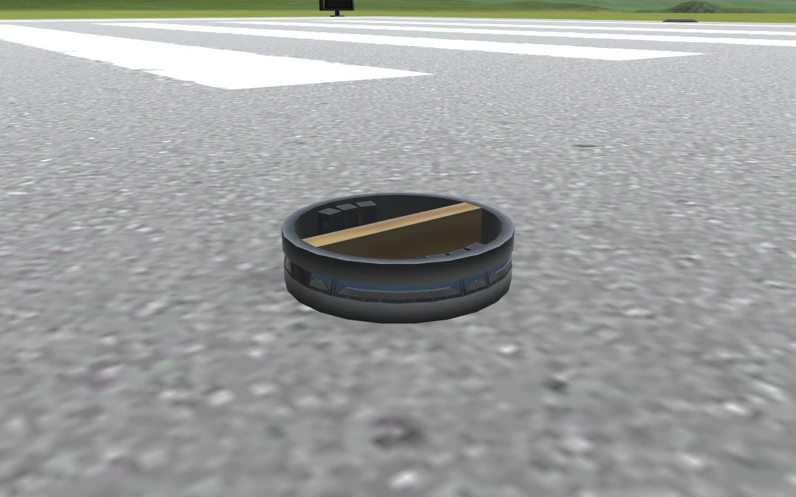
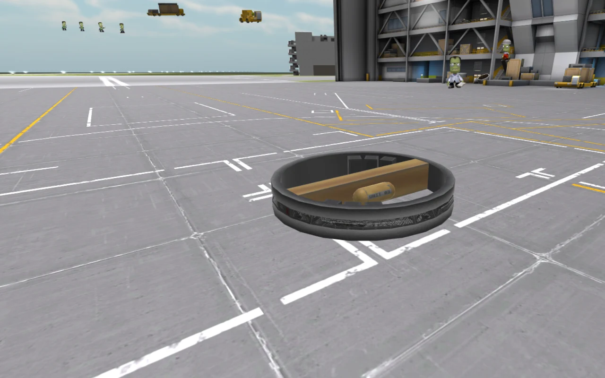
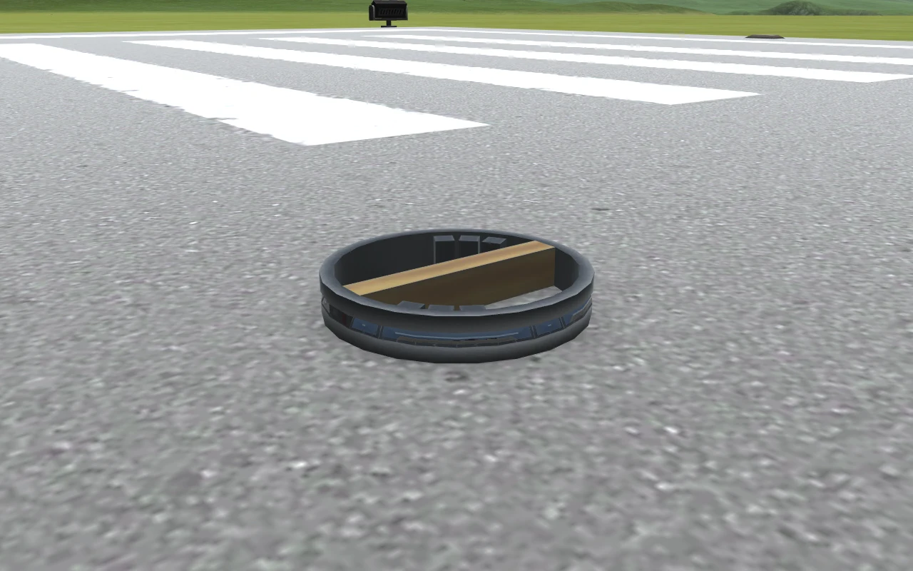

ShineFix home
← Back to supported mods
EvenMoarActionables
Optics verified
Human tested
Version 1.0.2
Compatibility evidence
Original screenshot gallery
Parts
Inline Mk0 SAS Mode Controller

Inline Mk1 SAS Mode Controller

